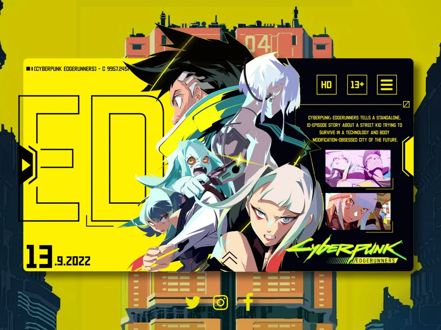
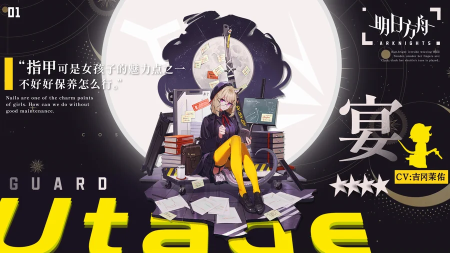
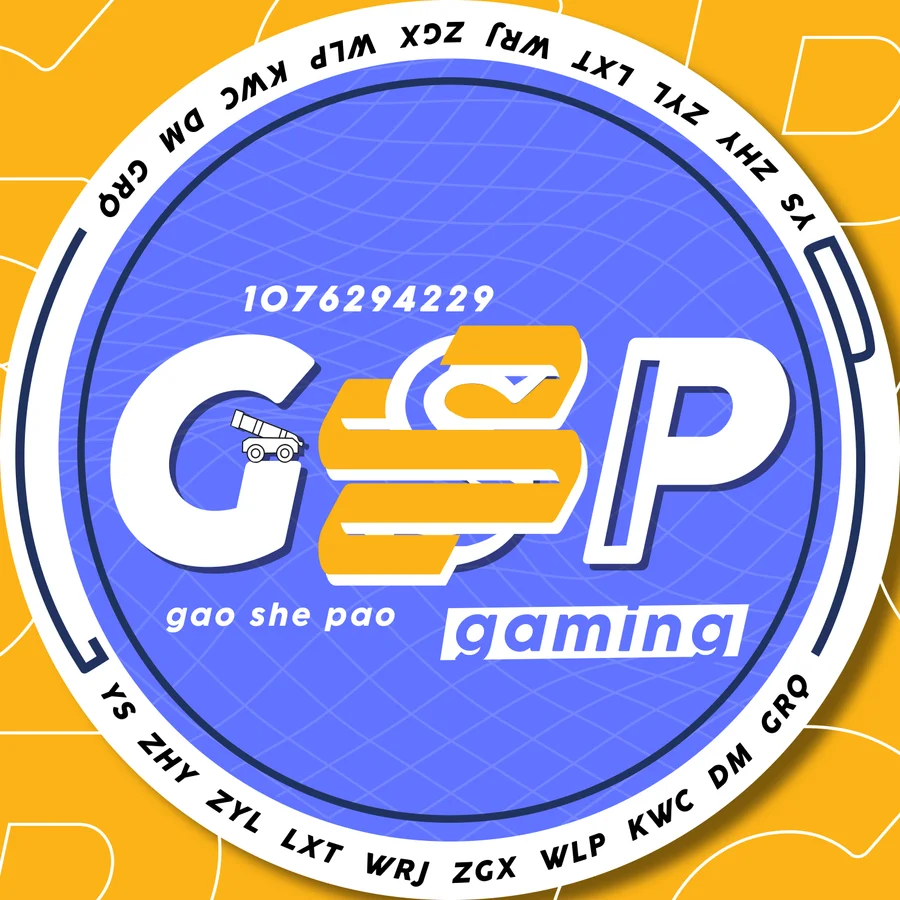
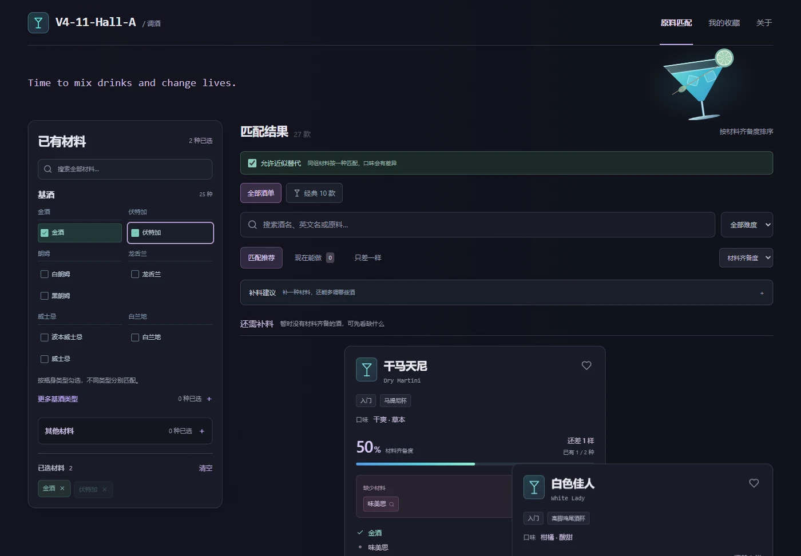
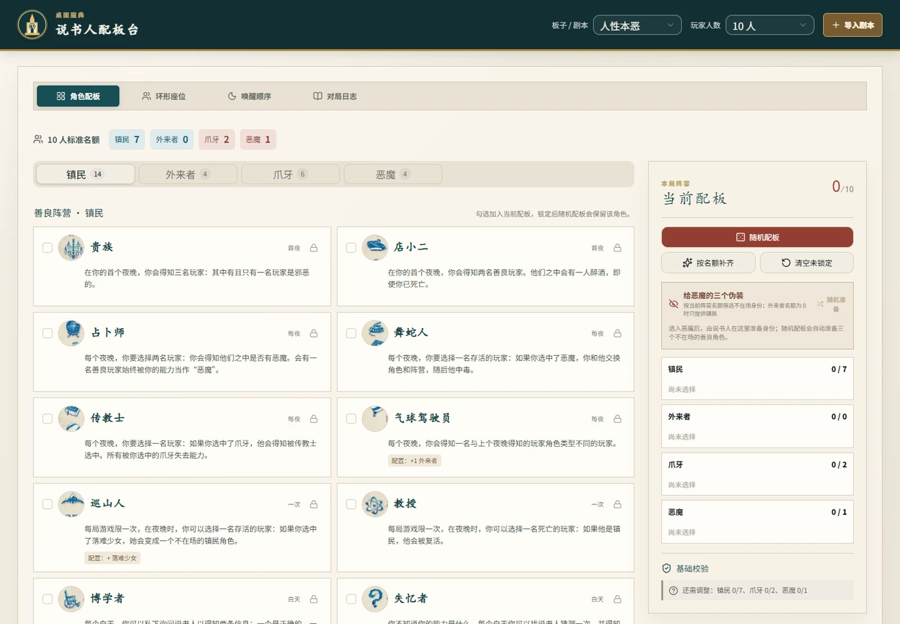

尹硕 / Shuo Yin让内容，
让内容，
连接更多可能。
海外内容运营 / 社交媒体 / 视觉内容制作 · 中英双语
UC Berkeley · Media Studies · 预计 2027.05 毕业
字体 / 排版 / 视觉合成



Type. Layout.Visual composition.


下滑翻阅故事 ↓跳过开场 ↗
Showreel / 动态视觉作品
02:54把静态，变成节奏.
字体、图形与画面节奏的动态表达。点击播放完整 Showreel。
Interactive products / Vibe Coding
查看视觉作品从想法，到可以体验.
从真实的使用问题出发，梳理功能与交互，再借助 AI 辅助开发、验证和迭代。
互动内容 / 问卷与结果分享
游戏风格 · 娱乐测试原型
用游戏情境问题，把玩家习惯转成可以分享的娱乐结果。
本地原型 · 暂未上线
浏览器工具 / 文件格式与交互
声取 · 浏览器音频助手
在视频页面完成音频解析、试听与格式选择。
安装后在浏览器使用
展示产品需求、交互设计与迭代过程；AI 辅助开发与合作署名见各项目详情。
Visual work
51 件视觉作品视觉，先开口.
从字形与标志，到主题海报、封面包装和视觉实验。通过排版、图形与色彩，探索不同主题的表达。
精选 9 / 共 51 件作品
已确认的创作分工：字体、排版与视觉合成。角色插画使用已有素材。
Background / 经历摘要
关于我的，快速了解.
Media Studies 本科在读，以内容制作、设计与运营经验连接创意和执行。
Shuo Yin / 尹硕教育背景
University of California, Berkeley
Media Studies · 本科在读 · 预计 2027.05 毕业
De Anza College
Media Studies · 2023 — 2025
实践方向
内容与运营
短视频策划、脚本与制作，社交媒体运营与内容复盘。
视觉与动态设计
字体、排版、视觉合成，以及数字界面与动态内容制作。
社团与活动
AI 设计与电影鉴赏社团组织、网站与标志设计、活动协作。
想法落地的地方向下探索 ↓
Selected work
实习、内容运营与校园实践项目与实践经历.
拖动卡片，自由整理想法
A little about me认真观察，
Always curious.
认真观察，
也认真生活。
Always curious.我喜欢做出内容，
也关心内容如何被看见。
从短视频制作、社交媒体运营，到 AI 社团与活动协作，我喜欢把想法变成具体的内容，也通过数据和用户互动理解它们的表现。设计、剪辑与 AI 工具是我的创作方式；快速学习和整合信息，帮助我在不同任务之间连接思路。
内容营销 / 产品运营 / 视觉与视频 / AI 探索
Let's work together期待下一次，
查看 GitHub 期待下一次，
一起把想法落地。
欢迎交流内容、营销、产品运营及创意制作相关的实习与合作机会。